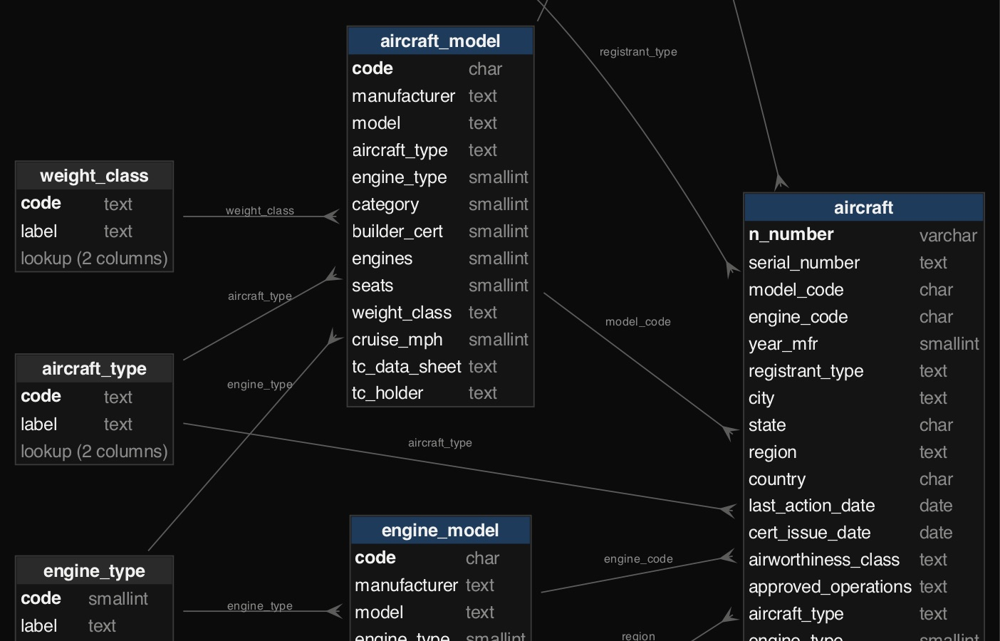
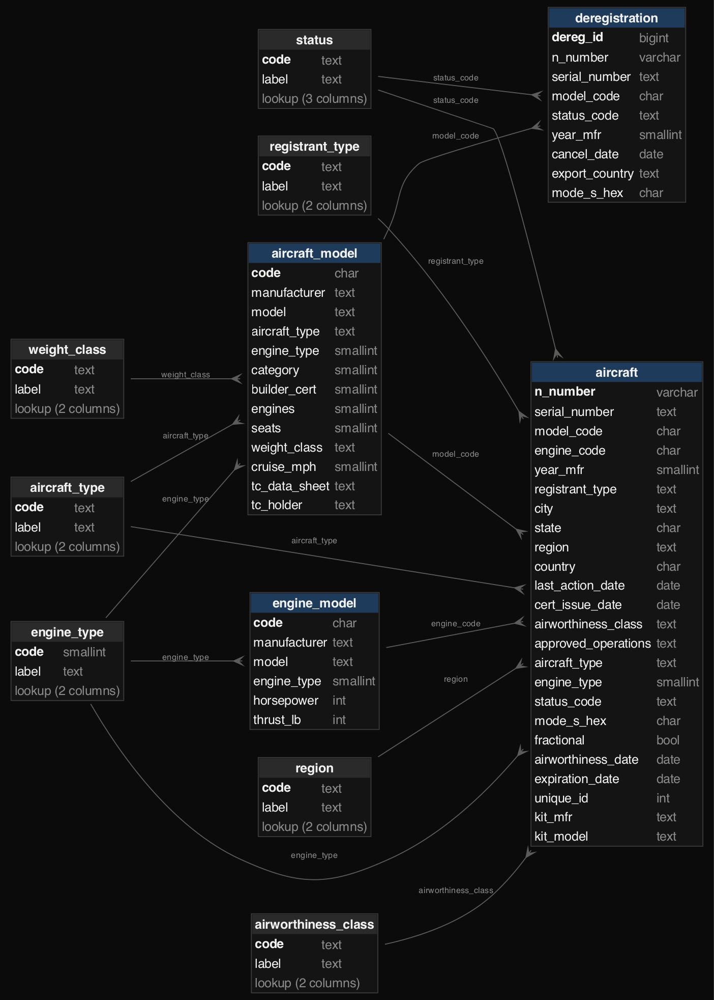
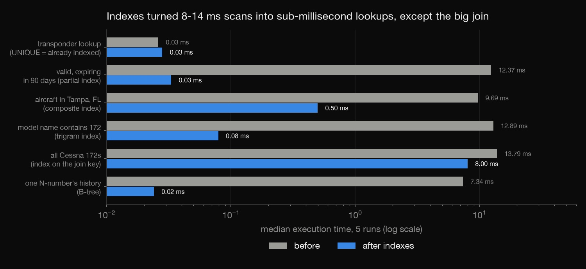
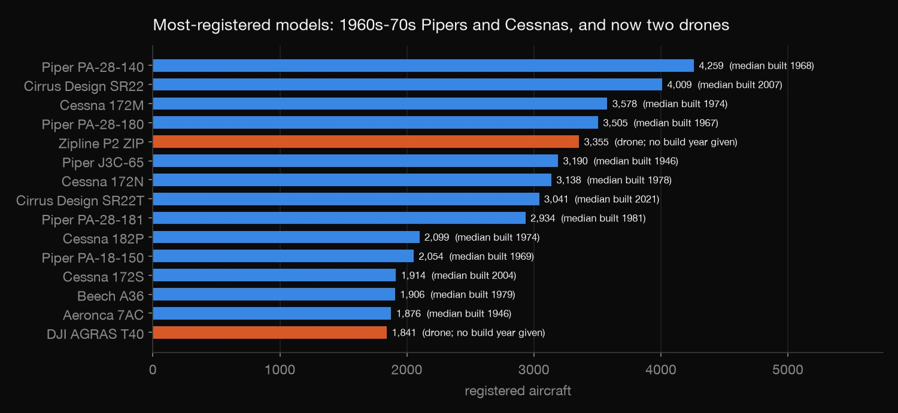
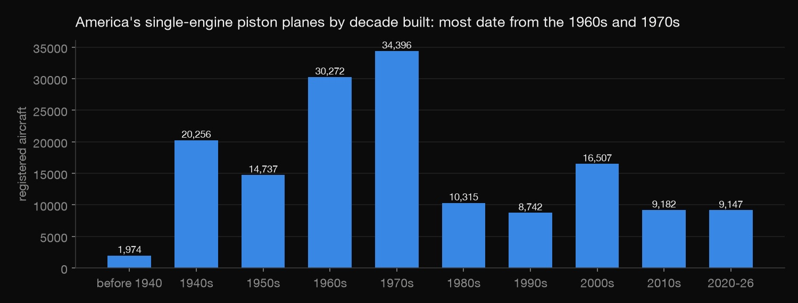
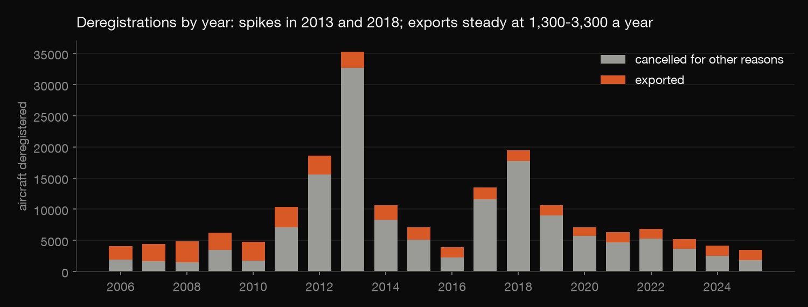

SQL · Database management · 2026-10
FAA Aircraft Registry Database
All 317,166 US-registered aircraft in PostgreSQL, built like a database administrator would: a constraint-checked schema, a load that logs every change, indexes timed before and after, least-privilege roles, and a backup that is actually restored.

Registrant names, street addresses and ZIP codes are never loaded, and only aggregates are published. A check fails if a personal-data column appears in the database.
01 — The problem
The FAA publishes its whole aircraft registry every day as fixed-width text files: every N-number, model, engine, owner type, status and expiration date. Airports, insurers, aviation analysts and plane-spotting apps all build databases from it. How do you turn those files into a database that rejects bad data, answers questions fast, shows only what each user should see, and can be restored after a failure?
02 — What I built
A PostgreSQL 18 database of the FAA Releasable Aircraft Database (30 September 2026):
- A normalised schema whose lookup tables come straight from the FAA's data dictionary.
- A staged load that logs every value it had to change.
- Six real questions timed with
EXPLAIN ANALYZEbefore and after indexing. - Views, a materialized summary and analyst/loader roles.
- A backup restored into a fresh database and compared row for row.
03 — How it was built
- 01
Read the files, leave personal data behind
The registry ships as space-padded, comma-separated text.
prepare.pytrims it and drops every name, street address, ZIP and county code before anything reaches the database; only city, state and country stay. One of 383,530 deregistration rows had a comma typed inside a name, which split a fixed-width field in two. Because every field has a fixed width, the reader repairs it by merging the two pieces whose widths add up to the field's width.i = next(i for i in range(len(r) - 1) if len(r[i]) != widths[i] and len(r[i]) + 1 + len(r[i + 1]) == widths[i]) - 02
Design a schema that rejects bad data
Seven lookup tables hold the FAA data dictionary's codes, so foreign keys reject any code the FAA never defined. CHECK constraints enforce the N-number format (no letters I or O), 6-hex-digit transponder codes, years built from 1903, and expiration on or after issue. N-numbers are reused over the decades (82,373 repeats in the history file), so the deregistration table gets its own surrogate key.
One constraint caught my own mistake. I'd capped engines per model at 20, and the load failed on the Velocitor X-1, an eVTOL design with 80 electric motors. The rule was wrong, not the data.

n_number varchar(5) PRIMARY KEY CHECK (n_number ~ '^[1-9][0-9A-HJ-NP-Z]{0,4}$'), -- no letters I or O - 03
Load through staging, and log every change
Raw text goes into a staging schema first. Typed rows then go into the real tables, and every value that has to change is written to a
load_issuetable first. A safe date-cast function turns a bad date into NULL instead of aborting the whole load. All rows load in about 15 seconds.Logged issue Rows Old status codes B/C 1,484 Year built "0000" 150 History year invalid 146 Unknown model code 42 Unknown airworthiness class 7 Type differs from model 4 Engine type blank 1 A gotcha:
COPYreads an empty CSV field as NULL, so tests likex = ''silently match nothing.EXCEPTION WHEN others THEN RETURN NULL; - 04
Index for real questions, and measure
Each question is timed in milliseconds with
EXPLAIN ANALYZE(median of 5 runs) before and after the indexes. PostgreSQL indexes primary keys and UNIQUE columns automatically, so the transponder lookup was already fast. It does not index foreign-key columns. The Cessna 172 join gains least because it returns tens of thousands of rows: indexes help selective questions, not big result sets.Question Before After Expiring in 90 days 12.37 0.03 Aircraft in Tampa 9.69 0.50 Name contains 172 12.89 0.08 All Cessna 172s 13.79 8.00 N-number history 7.34 0.02 
CREATE INDEX aircraft_expiring_idx ON faa.aircraft (expiration_date) WHERE status_code = 'V'; -- partial: valid registrations only - 05
Grant least privilege, and prove the backup
An analyst role reads tables and views. A loader role writes.
PUBLICgets nothing, and the raw staging data stays with the owner.check.pyswitches to the analyst role, confirms reads work and that a DELETE is refused, and tries five bad inserts that must each be rejected by the right constraint, all inside rolled-back transactions. Apg_dumpbackup (21 MB) is restored into a fresh database, and row counts plus an MD5 checksum of every aircraft row match.rejected("DELETE FROM faa.aircraft WHERE n_number = '100'", "permission denied", role="registry_analyst")
04 — Results
What the registry says, from the views:
- An old fleet: the median single-engine airplane was built in 1976, and most piston singles date from the 1960s and 1970s.
- Drones have arrived: Zipline's P2 Zip delivery drone (3,355) and DJI's Agras T40 crop sprayer (1,841) are among the 15 most-registered models, and 17,734 aircraft are electric.
- Exports since 2016 go mostly to Brazil (2,302) and Canada (2,266).
- Deregistrations spiked in 2013 (35,293) and 2018 (19,482).



05 — What I'd do next
- A daily incremental load that keeps history with valid-from and valid-to dates.
- Join live ADS-B traffic to the registry by transponder code.
- Row-level security, so a regional analyst sees only their region.